Chapter 8 성향점수(propensity score)
8.1 Observational Study?
Randomized Controlled Trials ("gold standard")
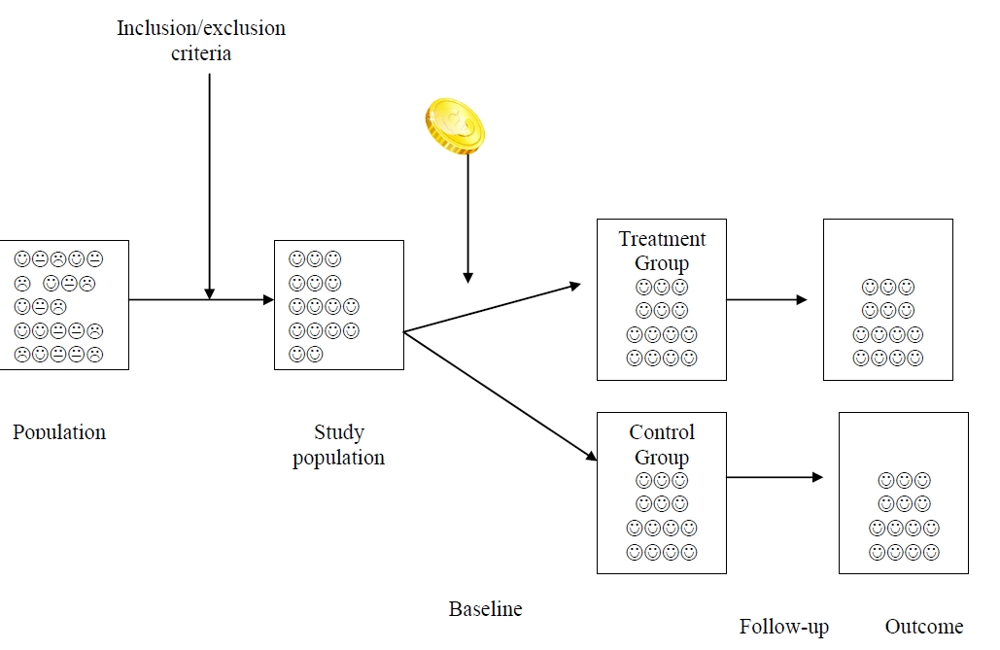
Characteristics of RCTs
Randomization ensures subjects in both treatment groups are equally matched on all factors.
Allow causal inference.
High cost
Often short duration and/or underpowered.
Problems with generalizability:
Treatment is "ideal" (high compliance, careful follow-up means that any problems may be caught early).
Many people who are given the treatments in "real life" are excluded from the trials.
Some situations cannot be randomized.
What is Observational Data?
The choice of treatment is not under the control of the researcher - the
researcher can only ‘observe’ what treatment was given.
Examples:
Data obtained using chart review
Electronic medical records
Survey data or health study data
Administrative data
Insurance claims data
Confounding due to Selection Bias
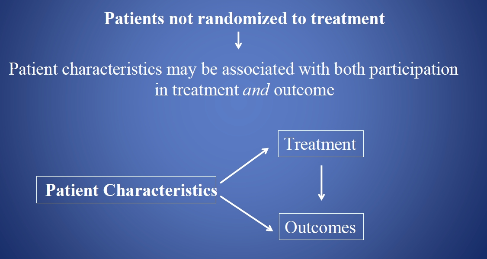
Impact of Selection Bias on Analytic Inferences
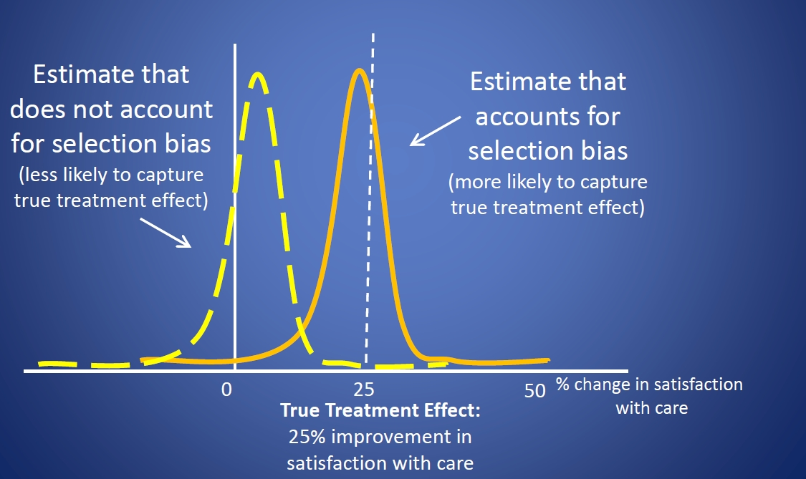
Statistical Adjustment for Observational Data
Conventional multivariate analysis
- Multivariate regression analysis
- Generalized linear model
- Cox’s proportional hazards model
- Conditional logistic regression
- Generalize estimating equation
- Multivariate regression analysis
Exact matching
Propensity score methods
And others
Addressing Selection Bias with Exact Matching
Goal: Match patients so well that you could imagine that they were randomly assigned to each group.
For each patient in the treatment group, find at least one untreated patient from the comparison group who is identical or as similar as possible on all baseline characteristics.
By matching patients at the individual level, the treatment and comparison groups will be matched at the group level.
Matching on Specific Variables
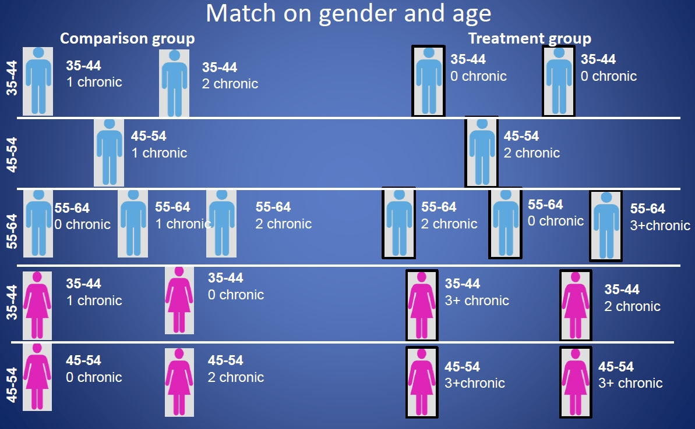
Matching on Specific Variables

8.2 Propensity Score?
Isn’t there an easier way?
\(\rightarrow\) Propensity score methodsRosenbaum and Rubin (1983) realized the bias from covariates can be eliminated by controlling for a scalar-valued funtion (a "balancing score") calculated from the baseline covariates, i.e., the propensity score.
The propensity score is a way of summarizing the information in all the prognostic variables.
Create a single composite score of all observed, measured potential confounders of the association between treatment and outcome
Propensity score is the conditional probability of treatment given the observed covariates \(X\) \[PS = P(Z=1 | X)\]
Match or weight on this one-dimensional score alone.
Do this without knowledge of the outcome variable
Propensity score assumption
Given a set of covariates:
- Treatment assignment and outcome are independent
- Everyone has a nonzero chance of receiving the treatment
- Treatment assignment and outcome are independent
Propensity scores can:
- Help find matches from comparison group so that measured
confounders are equally distributed between treatment \(\&\)
comparison groups
- Improve precision of treatment effect estimates
- Help find matches from comparison group so that measured
confounders are equally distributed between treatment \(\&\)
comparison groups
Propensity scores cannot:
- Account for unmeasured and unmeasurable confounders
General Procedure
Choose variables to include in propensity score
Ensure that propensity score is balanced across treatment and comparison groups
Ensure that covariates are balanced across treatment and comparison groups within blocks of the propensity score
Choose a matching or weighting strategy
Ensure that covariates are balanced across treatment and comparison groups in sample matched or weighted by propensity score
Proceed with analyses based on sample matched or weighted by propensity score
Choosing Variables for Propensity Scores
- Include:
- Theoretically related to treatment and outcome
- Available \(\&\) easy/reliable to collect on everyone
- Correlated with unmeasured confounders
- Theoretically related to treatment and outcome
- Do not include:
- Variables hypothesized to be associated with treatment but not
with outcome
- Variables that may be affected by the treatment
- Variables that predict treatment status perfectly
- Variables hypothesized to be associated with treatment but not
with outcome
Calculate Propensity Score
- Maximum likelihood estimation
- Logistic regression
- Probit regression
- Discriminant analysis
- Logistic regression
- Generalized boosting methods
- Classification and regression trees (CART)
- Neural networks
- Classification and regression trees (CART)
- Generalized method of moments (covariate balancing propensity score (CBPS))
Initial Checks: Balance across Groups

Check Balance of Covariates
Ideally, for each unique value of the propensity score, the distribution of \(X\) (composite of all covariates) is the same for the treatment and comparison groups.
This is practically impossible, so we check the balance of each observed covariate within blocks of the propensity score.
Some imbalance between the groups is usually expected.
Focus on balance of covariates that are more theoretically important.
Consider interactions/correlations between covariates.
Drop 1 or 2 covariates that are less important.
Re-categorize variables.
Include higher order terms or splines of variables.
Assess Balance with Standardized Differences
Account for means and variances
Not sensitive to sample size
Do not use statistical test such as t-test.

Balance of Covariates: Caution
Propensity scores only balance measured confounders.
Balance in measured variables does not indicate balance in unmeasured variables.
Unmeasured confounders will bias treatment effect estimates.
Do not use c-statistics, area under the curve, or any other model fit statistics to measure propensity score performance.
- They do not measure reduction in confounding.
Matching and Weighting Strategies

Choices When Matching Sample by Propensity Score
How close of a match is acceptable?
Should every treated individual have one or many matches in the comparison group?
Should treated individuals be matched with or without replacement?
Should matching be greedy or optimal?
Which Strategy to Chooose?
No best method
Without examining outcome, evaluate covariate balance in several strategies.
Choose the method that has the best balance and still meets the analytic goal.
Evaluate Balance in Sample Matched or Weighted
Standardized differences
Graphs
- Quantile-quantile plots
- Plots of covariates in treated and comparison groups
- Quantile-quantile plots
Ratios of variance
Visualization of Standardized Differences

Plots of Covariates between Groups
Plot density of weighted continuous covariate in treated group against density in comparison group
Subjective comparison

8.3 Propensity Score Methods
8.3.1 Propensity Score Matching
Create a matched sample based on logit(PS)
Assess balance between treated and untreated subjects in the matched sample.
- The test of a good propensity score model is how well it balances the measured variables between treated and untreated subjects.
For unbalanced variables, add interactions or higher order terms to the propensity score logistic regression, recalculate the propensity score and repeat the process.
General Procedure for Propensity Score Matching
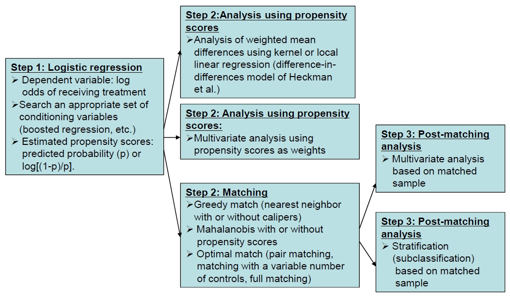
Greedy Matching
Nearest neighbor: \(C(P_i)=min_j |P_i-P_j|, \,\,\, j\in I_0\)
- The nonparticipant with the value of \(P_j\) that is closest to \(P_i\) is selected as the match.
Caliper: A variation of nearest neighbor: A match for persion \(i\) is selected only if \(|P_i-P_j|<\epsilon, \,\,\, j\in I_0\) where \(\epsilon\) is a pre-specified tolerance. Recommended caliper size: \(0.25\sigma_p\).
1-to-1 Nearest neighbor within caliper (common practice)
1-to-n Nearest neighbor within caliper
Mahalanobis Metric Matching
Mahalanobis without PS: Randomly ordering subjects, calculate the distance between the first participant and all nonparticipants. The distance, \(d(i,j)\) can be defined by the Mahalanobis distance \[d(i,j)=(u-v)^TC^{-1}(u-v)\] where \(u\) and \(v\) are values of the matching variables for participant \(i\) and nonparticipant \(j\), and \(C\) is the sample covariance matrix of the matching variables from the full set of nonparticipants.
Mahalanobis metric matching with PS added (to \(u\) and \(v\)).
Nearest available Mahalanobis metric matching within calipers defined by the prepensity score.
8.3.2 Stratification using Propensity Score
PS stratification splits the dataset into several strata on the basis of the individual’s PS alone, without reference to treatment (exposure) group.
A treatment effect is then estimated within each stratum, and an overall estimated treatment effect is calculated by taking a (weighted) average across strata.
Equal number of individuals in each stratum (5 or 10 strata).
Alternatively, split the range of possible PS into equal parts - fewer individuals in the more extreme strata.
Advantage: potential heterogeneity of "treatment" effects across strata.
8.3.3 Inverse Probability of Treatment Weighting
Uses the whole dataset but reweights individuals to increase the weights of those who received unexpected exposures.
This procedure can be thought of as producing additional observations for those parts of the target population from which there were few observations.
It effectively generates a pseudopopulation with near-perfect covariate balance between treatment groups.
Propensity score close to 0 (for the treated) or 1 (for the control) may be problematic for IPTW - trimming or truncating large weights.
The weights:
\[W = \frac{Z}{PS} + \frac{1-Z}{1-PS}\] where \(Z=1\) for the treatment group and 0 for the control group.
Treatment group:
\[W = \frac{1}{PS}\] weight = 1/(probability of receiving treatment)
Control group:
\[W = \frac{1}{1-PS}\] weight = 1/(1-probability of receiving treatment)
8.3.4 Propensity Score Adjustment as Covariate
Including the PS as an additional covariate in the regression model.
Alternatively, one could have only the PS and treatment in a model of the outcome of interest.
Showed excellent agreement across all PS methods and covariate adjustment.
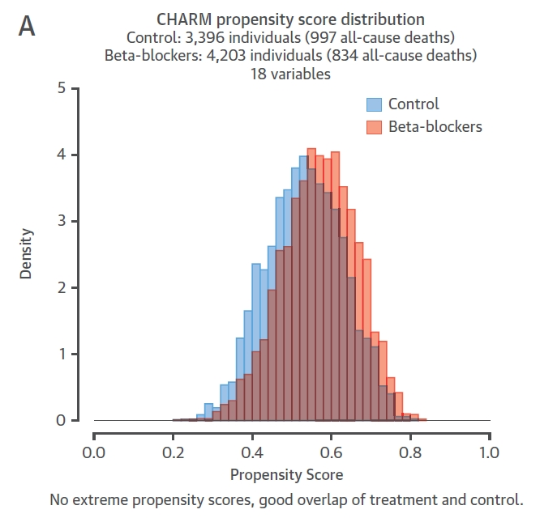
Covariate adjustment, matching, IPTW, and use of the PS as a covariate all showed similar results.
Stratification showed a wider CI with 5 strata and an unstable results with 10 strata.
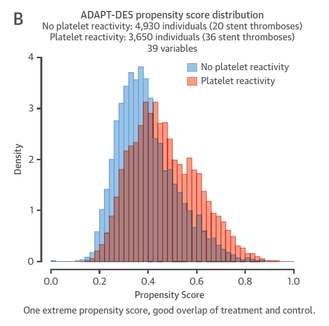
Different PS methods and covariate adjustment mostly produced similar results.
IPTW: smaller treatment effect with a wider CI - trimming, truncating, doubly robust

- Showed substantial disagreement between the methods, although the results were nonsignificant for almost all methods.

PS matching appears to be a reliable method, in that it provides excellent covariate balance in most circumstances.
PS stratification tends to work well when covariate imbalance is not very marked.
Inverse probability weighting offers a conceptually simple method that is easy to implement in practice and retains all study participants.
Covariate adjustment is the conventional method for correcting for covariate imbalance, selection bias, and potential confounding and provided reliable and statistically efficient estimates. Adding the PS as an additional covariate produces results very similar to covariate adjustment.
8.3.5 Property of Propensity Score
Available data is probably missing key covariates (e.g., living arrangements, smoling history)
Definition of the baseline time may be difficult (it suhould be the time at which the decision about treatment was made).
Reduced dimensionality of covariates (important for rare outcomes)
Can demonstrate that the two groups are similar on all measured covariates
Property of Observational Studies
Researcher has no control over assignment of subjects to treatments.
Researcher often has no control over what covariates are available, their definitions, or the quality of their measurement.
Useful when it is not feasible to use an RCT
- Unethical to withhold treatment
- Exposure believed to be harmful
- Patients will not agree to be randomized
- RCT too expensive
- Unethical to withhold treatment
Generalizable (all patients, all providers)
Allows studies of rare events, and studies with long follow-up times
8.4 Practice - SAS
8.4.1 Greedy Nearest Neighbor Matching
ods graphics on;\
proc psmatch data=bb.School region=treated;\
class Music Gender;\
psmodel Music(Treated='Yes')= Gender Absence;\
match method=greedy(k=2) caliper=0.25;\
assess ps var=(Gender Absence) / plots=all weight=none;\
output out(obs=match)=matchdata matchid=MatchID;\
run;\
proc sort data=matchdata;\
by matchid;\
run;Examples: PSMATCH Procedure
"https://documentation.sas.com/?docsetId=statug&docsetVersion=14.2\
&docsetTarget=statug_psmatch_examples.htm&locale=ko"
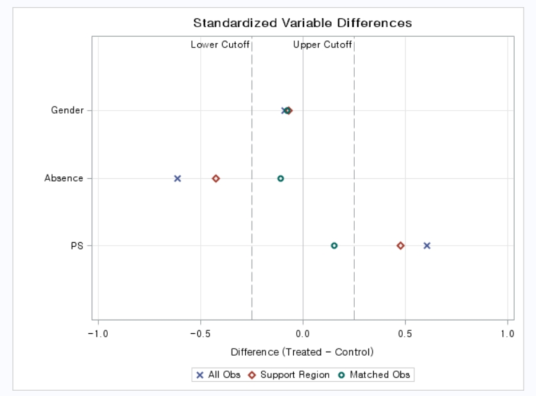
8.4.2 Propensity Score Stratification
proc psmatch data=bb.drugs region=allobs;\
class Drug Gender;\
psmodel Drug(Treated='Drug\_X')= Gender Age Bmi;\
strata nstrata=5;\
assess ps var=(Gender Age Bmi) / varinfo plots=(boxplot barchart);\
output out(obs=all)=OutEx2;\
run;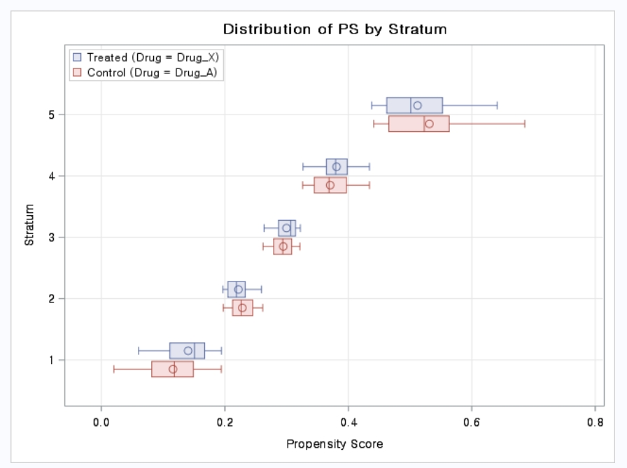
8.4.3 Inverse Probability Treatment Weighting
proc psmatch data=bb.drugs region=allobs;\
class Drug Gender;\
psmodel Drug(Treated='Drug\_X')= Gender Age Bmi;\
assess lps var=(Gender Age Bmi) / varinfo plots=(boxplot barchart)
weight=atewgt;\
output out(obs=all)=OutEx1 atewgt=atewgt;\
run;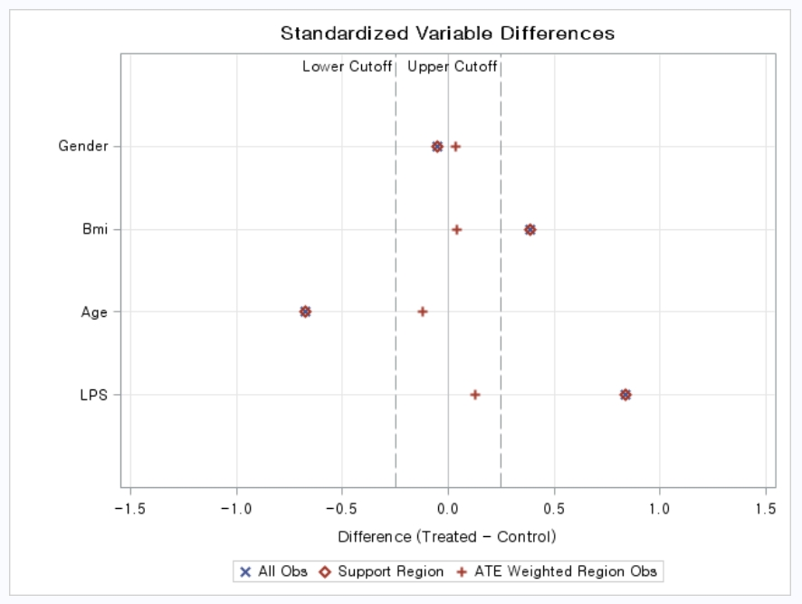
8.4.4 Matching with Existing propensity scores
ods select none;\
proc logistic data=bb.drugs;\
class Drug Gender;\
model Drug(Event='Drug\_X')= Gender Age Bmi / link=cloglog;\
output out=drug1 p=pscore;\
run;\ods select all;\
proc psmatch data=Drug1 region=cs;\
class Drug Gender;\
psdata treatvar=Drug(Treated='Drug\_X') ps=pscore;\
match method=optimal(k=1) exact=Gender stat=lps caliper=0.5;\
assess lps var=(Gender Age Bmi) / weight=none;\
output out(obs=match)=OutEx7 lps=\_Lps matchid=\_MatchID;\
run;8.4.5 Matching with Existing propensity scores
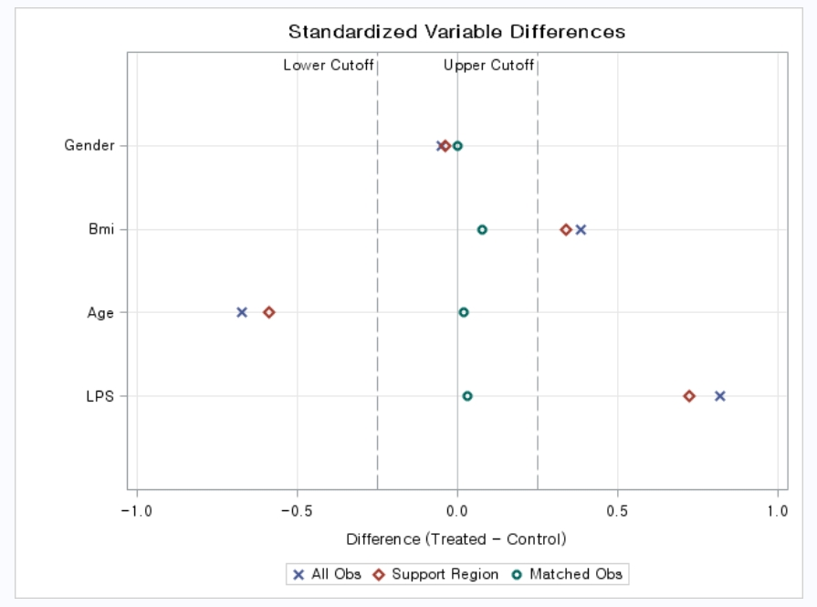